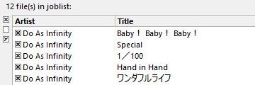

Download the latest version of fre:ac from SourceForge or from the fre:ac homepage. Install the program and start it. Now put an audio CD in your CD/DVD drive. The CD tracks will usually show up automatically in the fre:ac main window. If they do not, click the "Add audio CD contents" button to add the tracks to the joblist.

Since we do not want to have to manually enter names for the CDs we can just query the freedb CD database online to fill in the names for us. To do this we simply go to the "Database" menu and hit "Query CDDB database". We should get a screen that looks like this:

The program will automatically fill in track information:
Once that's done we should configure the general settings for the program. Go to the "Options" menu and select "General settings". This will display the following dialog:
In the first screen we can set the encoder settings. fre:ac defaults to using the LAME MP3 encoder. We will be using it in this tutorial. Make sure the "Encode on the fly" option is checked. Also set your output directory to where you want the encoded MP3s to go. I've set this directory to my music directory.
The file name pattern box is where you can set how the file names will be formatted. I happen to like having mine in directories where the album name and artist appear in the directory header and the filenames will be tracks followed by their title. The corresponding file name pattern is "<artist> - <album>\<track> - <title>". So in this case it will end up with file names looking like these:

For the more advanced users there are many other settings which can be modified to fit personal likings or requirements.
We should now configure the LAME encoder so that we have decent MP3 output. Go to the "Options" menu and select "Configure selected encoder".

You should get a screen similar to the one shown below.

fre:ac comes with several different presets for the LAME encoder. All of these just give different settings to the encoder with various qualities. The higher the setting (e.g. "Extreme") the more room the MP3s will take up on your hard drive but the better they will sound. I prefer to use the custom settings and set qualities individually. You can see those settings here. For now let's leave the preset on Standard. Hit ok and we can select which tracks we want to rip and encode.
Now that we are back in the main screen we can select which tracks we want to rip and encode. To the left of every track there is a little check box. The ones that have an × in them are the ones that are marked for ripping and encoding. Since I want to rip the whole CD I will leave all 5 checked but if you only wanted one track you could uncheck all but that one.
We can now hit the big play button which will start the encoding process.

The bottom of the window will start to show a progress bar:

As each song finishes, the joblist (where all the titles are displayed) will automatically remove any finished songs.
Congratulations! You've just ripped and encoded your first CD with fre:ac!